PDF 第 4 页
绪论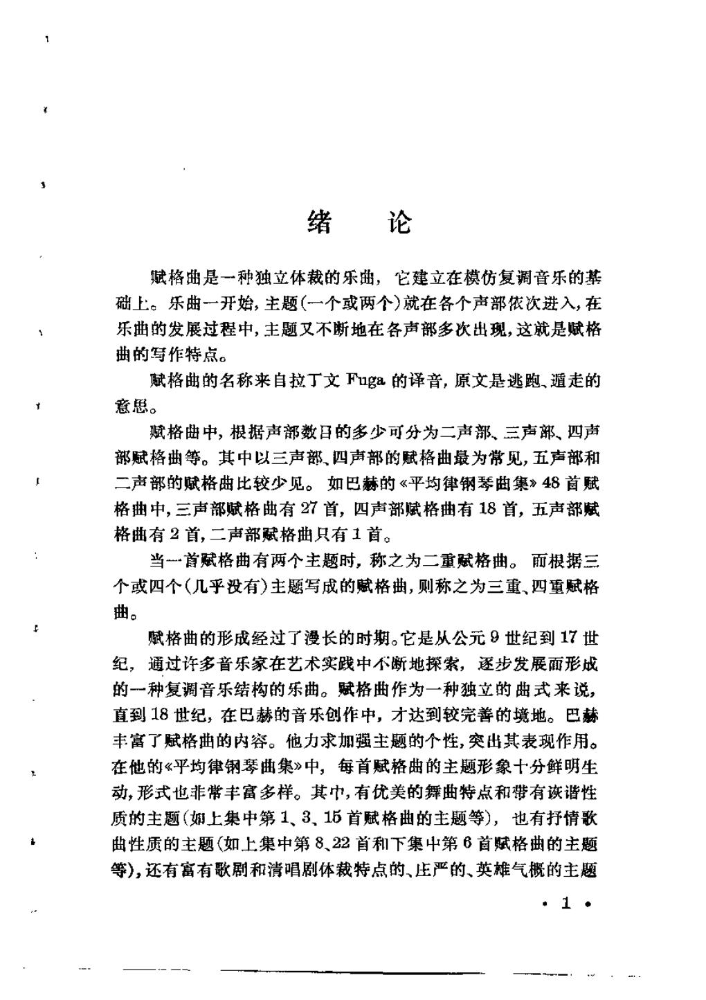
绪 论
赋格曲是一种独立体裁的乐曲，它建立在模仿复调音乐的基
础上。乐曲一开始，主题（一个或两个）就在各个声部依次进入，在
乐曲的发展过程中，主题又不断地在各声部多次出现，这就是赋格
曲的写作特点。
赋格曲的名称来自拉丁文Fuga的译音，原文是逃跑、道走的
意思。
赋格曲中，根据声部数日的多少可分为二声部、三声部、四声
部赋格曲等。其中以三声部，四声部的赋格曲最为常见，五声部和
二声部的赋格曲比较少见。如巴赫的《平均律钢琴曲集》48首赋
格曲中，三声部赋格曲有27首，四声部赋格曲有18首，五声部赋
格曲有2首，二声部赋格曲只有1首。
当一首赋格曲有两个主题时，称之为二重赋格曲。面根据三
个或四个（几乎没有）主题写成的赋格曲，则称之为三重、四重赋格
曲。
赋格曲的形成经过了漫长的时期。它是从公元9世纪到17世
纪，通过许多音乐家在艺术实践中不断地探索，逐步发展面形成
的一种复调音乐结构的乐曲。赋格曲作为一种独立的曲式来说，
直到18世纪，在巴赫的音乐创作中，才达到较完善的境地。巴赫
丰富了赋格曲的内容。他力求加强主题的个性，突出其表现作用。
在他的《平均律钢琴曲集》中，每首赋格曲的主题形象十分鲜明生
动，形式也非常丰富多样。其中，有优美的舞曲特点和带有该谐性
质的主题（奶上集中第1、3.15首赋格曲的主题等），也有抒情歌
等），还有富有歌剧和清唱剧体裁特点的、庄严的、英雄气概的主题
·1·
PDF 第 8 页
第一章 主题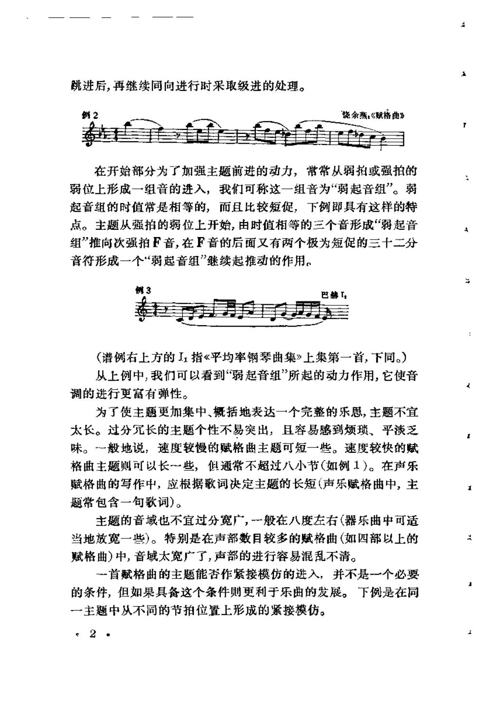
跳进后，再继续同向进行时采取级进的处理。
饶余燕：《赋格曲》
刘2
在开始部分为了加强主题前进的动力，常常从弱拍或强拍的
弱位上形成一组音的进入，我们可称这一组音为“弱起音组”。弱
起音组的时值常是相等的，而且比较短促，下例即具有这样的特
点。主题从强拍的弱位上开始，由时值相等的三个音形成“弱起音
组”推向次强拍F音，在F音的后面又有两个极为短促的三十二分
音符形成一个“弱起音组”继续起推动的作用。
例3
巴鳞L
（谱例右上方的I指《平均率钢琴曲集》上集第一首，下同。)
从上例中，我们可以看到“弱起音组"所起的动力作用，它使音
调的进行更富有弹性。
为了使主题更加集中、概括地表达一个完整的乐思，主题不宜
太长。过分冗长的主题个性不易突出，且容易感到烦琐、平淡乏
味。“般地说，速度较慢的赋格曲主题可短一些。速度较快的赋
格曲主题则可以长一些，但通常不超过八小节（如例1）。在声乐
赋格曲的写作中，应根据歌词决定主题的长短（声乐赋格曲中，主
题常包含一句歌词）。
主题的音域也不宜过分宽广，一般在八度左右（器乐曲中可适
当地放宽一些)。特别是在声部数目较多的赋格曲（如四部以上的
赋格曲）中，音域太宽广了，声部的进行容易混乱不清。
一-首赋格曲的主题能否作紧接模仿的进入，并不是一个必要
的条件，但如果具备这个条件则更利于乐曲的发展。下例是在同
一主题中从不同的节拍位置上形成的紧接模仿。
2
- 主题的调性、长度、音域与收束位置
多数主题留在主调或只触及属调；声乐赋格常不超过一个八度；主题通常结束在强拍，长度要足以成为完整乐思，又不能长到妨碍多声部进入。
“主题的音域也不宜过分宽广，一般在八度左右”
- 主题的长度由“可记忆”与“可处理”共同决定
过短难以形成印象，过长会削弱答题的模仿效果；判断标准是主题能否在若干声部与变形中保持统一。
“为了使主题更加集中、概括地表达一个完整的乐思，主题不宜太长。”
PDF 第 18 页
第一章 主题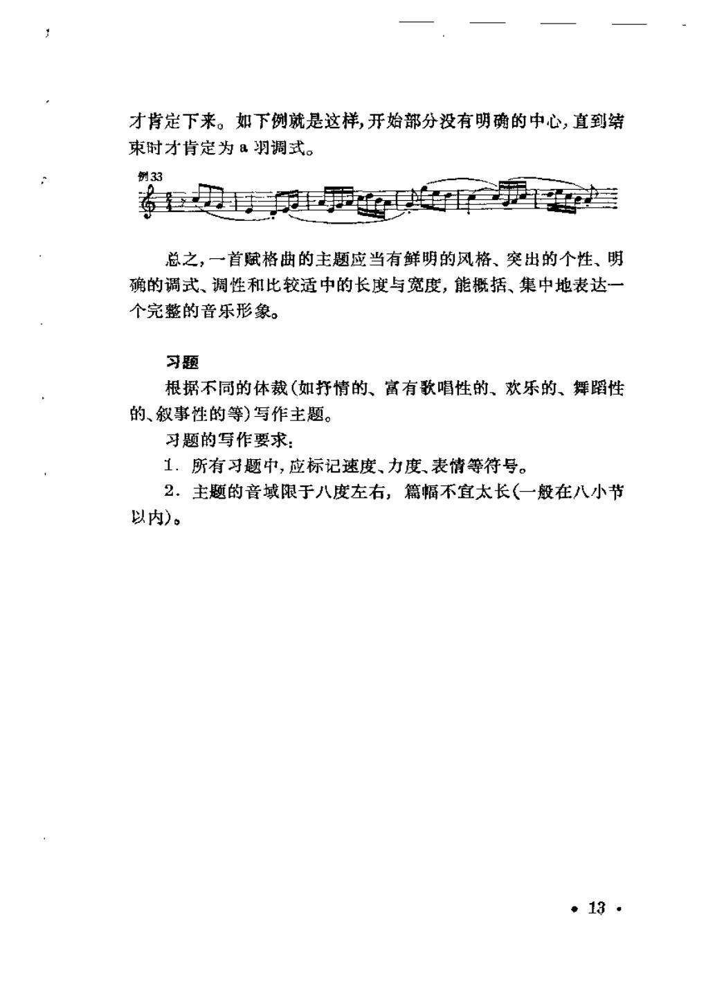
才肯定下来。如下例就是这样，开始部分没有明确的中心，直到结
束时才肯定为8羽调式。
例33
总之，一首赋格曲的主题应当有鲜明的风格、突出的个性、明
确的调式、调性和比较适中的长度与宽度，能概括、集中地表达一
个完整的音乐形象。
习题
根据不同的体裁（如抒情的、富有歌唱性的、欢乐的、舞蹈性
的、叙事性的等)写作主题。
习题的写作要求：
1．所有习题中，应标记速度、力度、表情等符号。
2．主题的音域限于八度左右，篇幅不宜太长（一般在八小节
以内)。
13
PDF 第 23 页
第二章 答题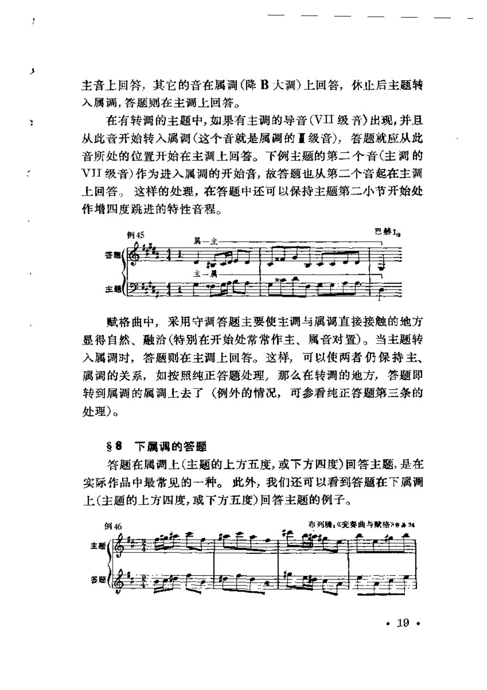
主音上回答，其它的音在属调（降B大调）上回答，休止后主题转
入属调，答题则在主调上回答。
在有转调的主题中，如果有主调的导音（VII级音）出现，并且
从此音开始转入属调（这个音就是属调的I级音）：答题就应从此
音所处的位置开始在主调上回答。下例主题的第二个音（主调的
VJI级音）作为进入属调的开始音，故答题也从第二个音起在主调
上回答，这样的处理，在答题中还可以保持主题第二小节开始处
作增四度跳进的特性音程。
巴赫I
例45
赋格曲中，采用守调答题主要使主调与属调直接接触的地方
显得自然、融洽（特别在开始处常常作主、属音对置）。当主题转
入属调时，答题则在主调上回答。这样，可以使两者仍保持主、
属调的关系，如按照纯正答题处理，那么在转调的地方，答题即
转到属调的属调上去了（例外的情况，可参看纯正答题第三条的
处理）。
8下属调的答题
答题在属调上(主题的上方五度，或下方四度)回答主题，是在
实际作品中最常见的一种。此外，我们还可以看到答题在下属调
上（主题的上方四度，或下方五度）回答主题的例子。
布列腾：《变奏曲与赋格》作34
例46
19
PDF 第 25 页
第二章 答题：守调答题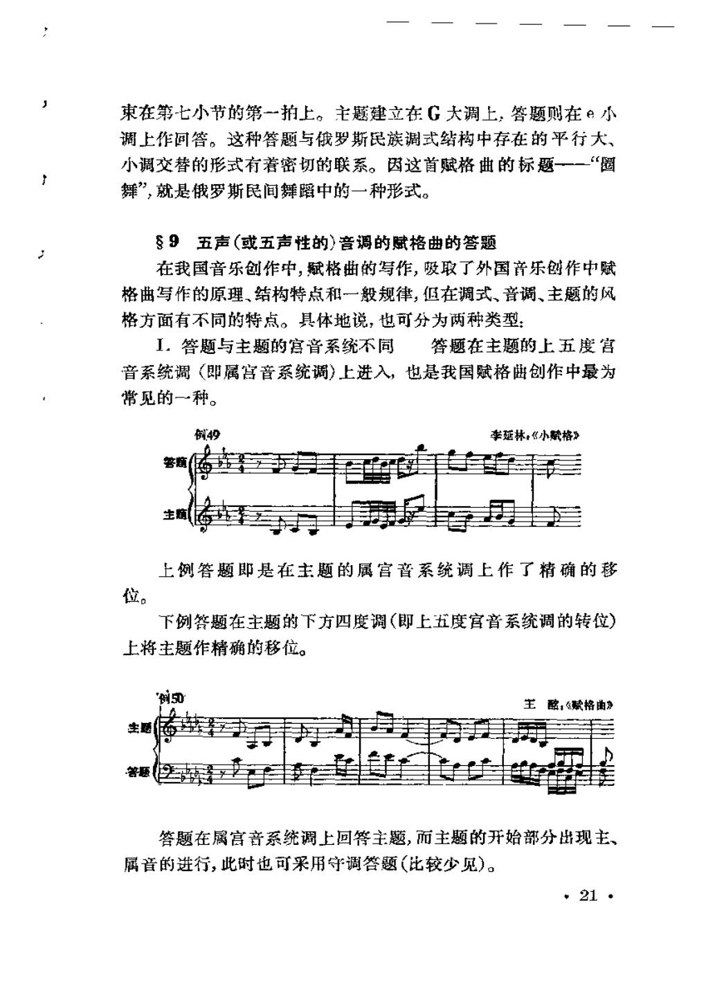
束在第七小节的第一拍上。主题建立在G大调上，答题则在é小
调上作回答。这种答题与俄罗斯民族调式结构中存在的平行大、
小调交替的形式有着密切的联系。因这首赋格曲的标题一一“圈
舞”，就是俄罗斯民间舞蹈中的一种形式。
9五声（或五声性的）音调的赋格曲的答题
在我国音乐创作中，赋格曲的写作，吸取了外国音乐创作中赋
格曲写作的原理、结构特点和一般规律，但在调式、音调、主题的风
格方面有不同的特点。具体地说，也可分为两种类型：
1.答题与主题的宫音系统不同
答题在主题的上五度宫
音系统调（即属宫音系统调）上进入，也是我国赋格曲创作中最为
常见的一种。
例49
李延林：《小赋格》
上例答题即是在主题的属宫音系统调上作了精确的移
位。
下例答题在主题的下方四度调（即上五度宫音系统调的转位）
上将主题作精确的移位。
王酪：《赋格曲》
答题在属宫音系统调上回答主题，而主题的开始部分出现主、
属音的进行，此时也可采用守调答题（比较少见）。
·21·
PDF 第 32 页
第三章 对题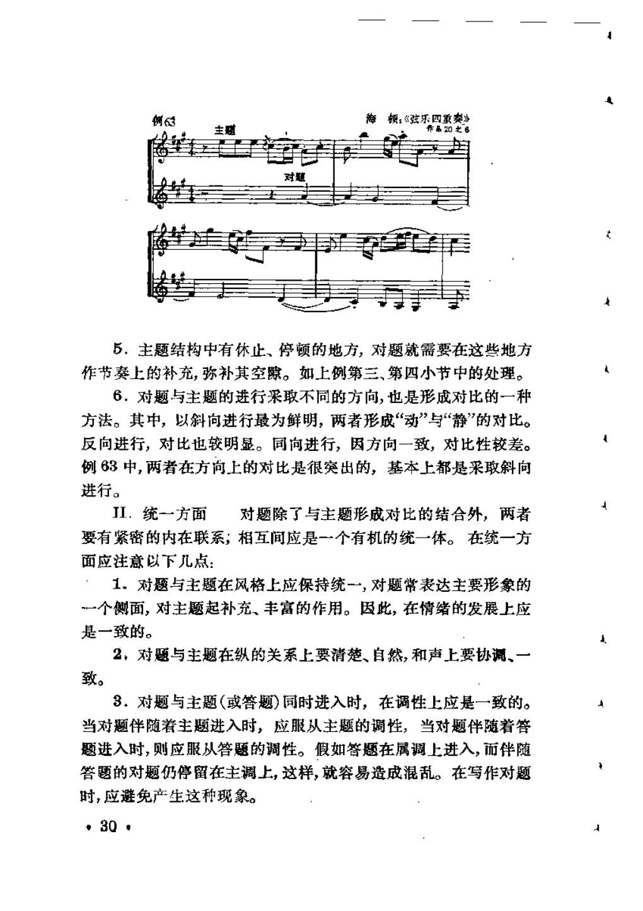
海顿：《弦乐四重奏》
例63
主题
作品20史6
对题
5.主题结构中有休止、停顿的地方，对题就需要在这些地方
作节奏上的补充，弥补其空隙。如上例第三、第四小节中的处理。
6.对题与主题的进行采取不同的方向，也是形成对比的一种
方法。其中，以斜向进行最为鲜明，两者形成“动”与“静”的对比。
反向进行，对比也较明显。同向进行，因方向一致，对比性较差。
例63中，两者在方向上的对比是很突出的，基本上都是采取斜向
进行。
JI.统一方面
对题除了与主题形成对比的结合外，两者
要有紧密的内在联系；相互间应是一个有机的统一体。在统一方
面应注意以下儿点：
1.对题与主题在风格上应保持统一，对题常表达主要形象的
一个侧面，对主题起补充、丰富的作用。因此，在情绪的发展上应
是一致的。
2，对题与主题在纵的关系上要清楚、自然，和声上要协调、一
致。
3.对题与主题（或答题）同时进入时，在调性上应是一致的。
当对题伴随着主题进入时，应服从主题的调性，当对题伴随着答
题进入时，则应服从答题的调性。假如答题在属调上进入，而伴随
答题的对题仍停留在主调上，这样，就容易造成混乱。在写作对题
时，应避免产生这种现象。
·30·
PDF 第 38 页
第四章 呈示部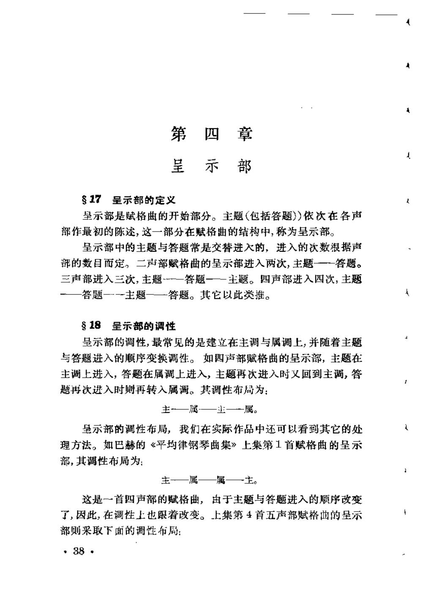
第四章
呈示部
17呈示部的定义
呈示部是赋格曲的开始部分。主题（包括答题))依次在各声
部作最初的陈述，这一部分在赋格曲的结构中，称为呈示部。
呈示部中的主题与答题常是交替进入的，进入的次数根据声
部的数目而定。二声部赋格曲的呈示部进入两次，主题一一一答题。
三声部进入三次，主题--—答题一—主题。四声部进入四次，主题
答题—-一-主题一一答题。其它以此类推。
818呈示部的调性
是示部的调性，最常见的是建立在主调与属调上，并随着主题
与答题进入的顺序变换调生。如四声部赋格曲的呈示部，主题在
主调上进入，答题在属调上进入，主题再次进入时又回到主调，答
题再次进入时则再转入属调，其调性布局为：
主-—属——主一-属。
呈示部的调性布局，我们在实际作品中还可以看到其它的处
理方法。如巴赫的《平均律钢琴曲集》上集第1首赋格曲的呈示
部，其调性布局为：
主——属—属—主。
这是一首四声部的赋格曲，由于主题与答题进入的顺序改变
了，因此，在调性上也跟着改变。上集第4首五声部赋格曲的呈示
部则采取下面的调性布局：
·38*
- 呈示部按声部数完成主题与答题的交替
二声部是主题—答题；三声部是主题—答题—主题；四声部是主题—答题—主题—答题。每次进入都应有清楚的音区与声部定位。
“呈示部中的主题与答题常是交替进入的，进入的次数根据声部的数目而定。”
- 呈示部要求所有声部出场，并建立主属调性
呈示部不是“主题第一次出现”的同义词，而是所有声部依次陈述主题或答题的段落。它通常停在主调，随后才进入中间部。
“呈示部是赋格曲的开始部分。主题（包括答题))依次在各声部作最初的陈述”
PDF 第 46 页
第五章 间插部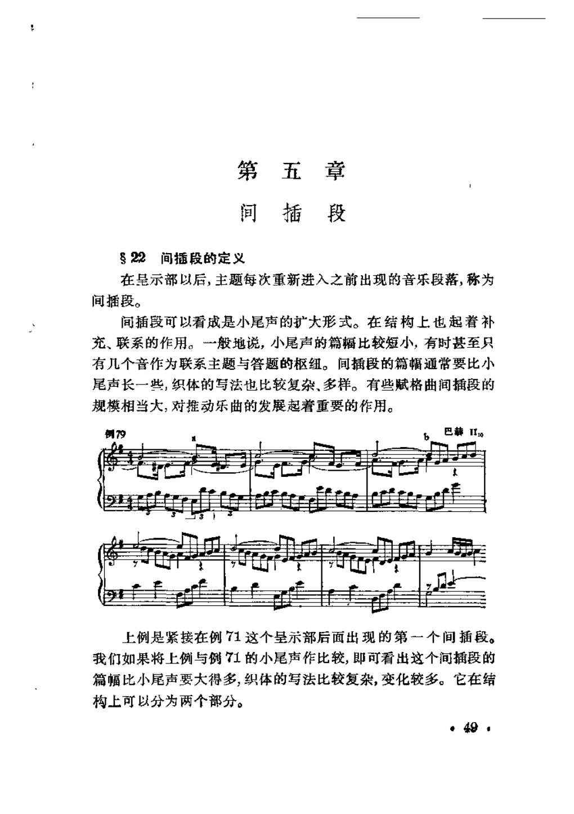
第五章
间插段
822间插段的定义
在是示部以后，主题每次重新进入之前出现的音乐段落，称为
间插段。
间插段可以看成是小尾声的扩大形式。在结构上也起着补
充、联系的作用。“般地说，小尾声的篇辐比较短小，有时甚至只
有几个音作为联系主题与答题的枢纽。间插段的篇幅通常要比小
尾声长一些，织体的写法也比较复杂、多样。有些赋格曲间插段的
规模相当大，对推动乐曲的发展起着重要的作用。
刚79
上例是紧接在例71这个呈示部后面出现的第一个间插段。
我们如果将上例与例71的小尾声作比较，即可看出这个间插段的
篇幅比小尾声要大得多，织体的写法比较复杂，变化较多。它在结
构上可以分为两个部分。
PDF 第 47 页
第五章 间插部：作用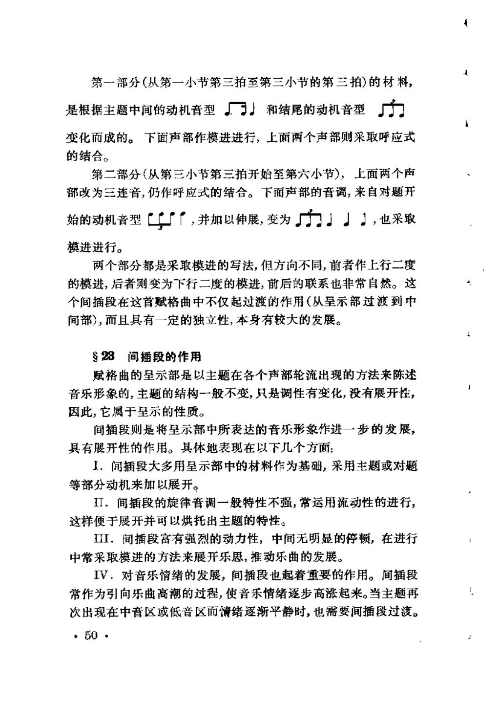
第一部分（从第一小节第三拍至第三小节的第三拍)的材料，
是根据主题中间的动机音型厂」和结尾的动机音型」
变化而成的。下面声部作模进进行，上面两个声部则采取呼应式
的结合。
第二部分（从第三小节第三拍开始至第六小节)，上面两个声
部改为三连音，仍作呼应式的结合。下面声部的音调，来自对题开
始的动机音型，并加以伸展，变为」」」，也采取
模进进行。
两个部分都是采取模进的写法，但方向不同，前者作上行二度
的模进，后者则变为下行二度的模进，前后的联系也非常自然。这
个间插段在这首赋格曲中不仅起过渡的作用（从呈示部过渡到中
间部)，而且具有一定的独立性，本身有较大的发展。
28间插段的作用
音乐形象的，主题的结构一般不变，只是调性有变化，没有展开性，
因此，它属于呈示的性质。
间插段则是将呈示部中所表达的音乐形象作进一步的发展，
具有展开性的作用。具体地表现在以下几个方面：
1.间插段大多用呈示部中的材料作为基础，采用主题或对题
等部分动机来加以展开。
IT.间插段的旋律音调一般特性不强，常运用流动性的进行，
这样便于展开并可以烘托出主题的特性。
III.间插段富有强烈的动力性，中间无明显的停顿，在进行
中常采取模进的方法来展开乐思，推动乐曲的发展。
IV.对音乐情绪的发展，间插段也起着重要的作用。间插段
常作为引向乐曲高潮的过程，使音乐情绪逐步高涨起来。当主题再
次出现在中音区或低音区而情绪逐渐平静时，也需要间插段过渡。
·50·
PDF 第 64 页
第六章 中间部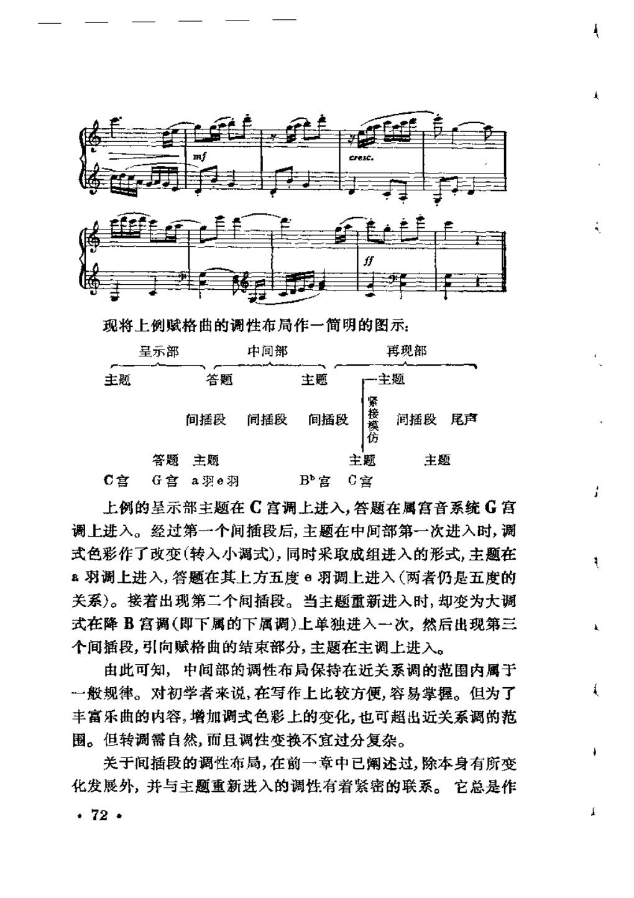
伊
现将上例赋格曲的调性布局作一简明的图示：
呈示部
中间部
再现部
答题
主题
主题
主题
紧接模仿
润插段尾声
间插段
间插段
间插段
主题
答题主题
主题
C宫G宫a羽e羽
B宫C宫
上例的呈示部主题在C宫调上进入，答题在属宫音系统G宫
调上进入。经过第一个间插段后，主题在中间部第一次进入时，调
式色彩作了改变(转入小调式)，同时采取成组进入的形式，主题在
&羽调上进入，答题在其上方五度·羽调上进入（两者仍是五度的
关系）。接着出现第二个间插段。当主题重新进入时，却变为大调
式在降B宫调（即下属的下属调）上单独进入一次，然后出现第三
个间插段，引向赋格曲的结束部分，主题在主调上进入。
由此可知，中间部的调性布局保持在近关系调的范围内属于
一般规律。对初学者来说，在写作上比较方便，容易掌握。但为了
丰富乐曲的内容，增加调式色彩上的变化，也可超出近关系调的范
围。但转调需自然，而且调性变换不宜过分复杂。
关于间插段的调性布局，在前一章中已阐述过，除本身有所变
化发展外，并与主题重新进入的调性有着紧密的联系。它总是作
72
PDF 第 74 页
第七章 紧接模仿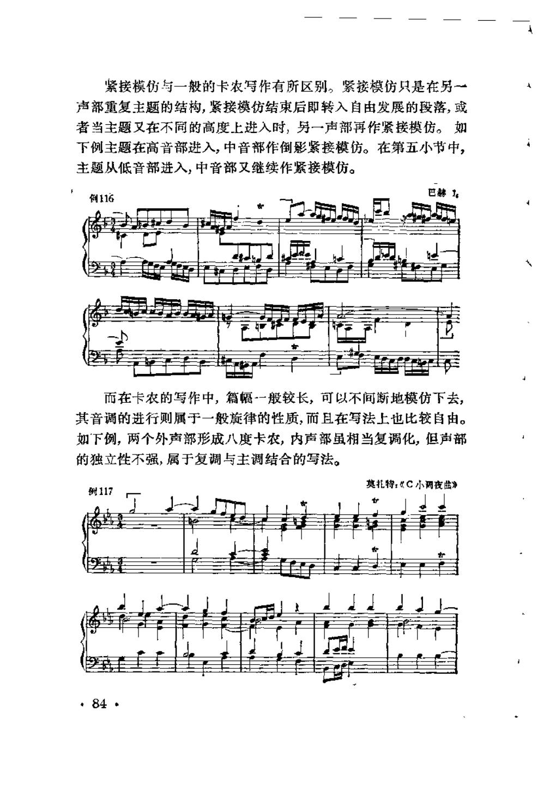
紧接模仿与一般的卡农写作有所区别。紧接模仿只是在另一
声部重复主题的结构，紧接模仿结束后即转入自由发展的段落，或
者当主题又在不同的高度上进入时，另一声部再作紧接模仿。如
下例主题在高音部进入，中音部作倒影紧接模仿。在第五小节中，
主题从低音部进入，中音部又继续作紧接模仿。
巴赫1
例116
而在卡农的写作中，篇幅-一般较长，可以不间断地模仿下去，
其音调的进行则属于一般旋律的性质，而且在写法上也比较自由。
如下例，两个外声部形成八度卡农，内声部虽相当复调化，但声部
的独立性不强，属于复调与主调结合的写法。
莫扎特：C小调夜曲》
例117
- 密接和应：主题尚未结束就再次进入
紧接进入的条件是时间重叠。它增加和声密度与调性张力，并要求主题在音程、音区和可结合性上预先设计。
“紧接模仿只是在另一声部重复主题的结构，紧接模仿结束后即转入自由发展的段落”
- 密接和应不是整首卡农
它只在局部让主题重叠；重叠结束后仍回到自由对位、间插或下一次主题进入。
“紧接模仿与一般的卡农写作有所区别。”
PDF 第 84 页
第八章 再现部与尾声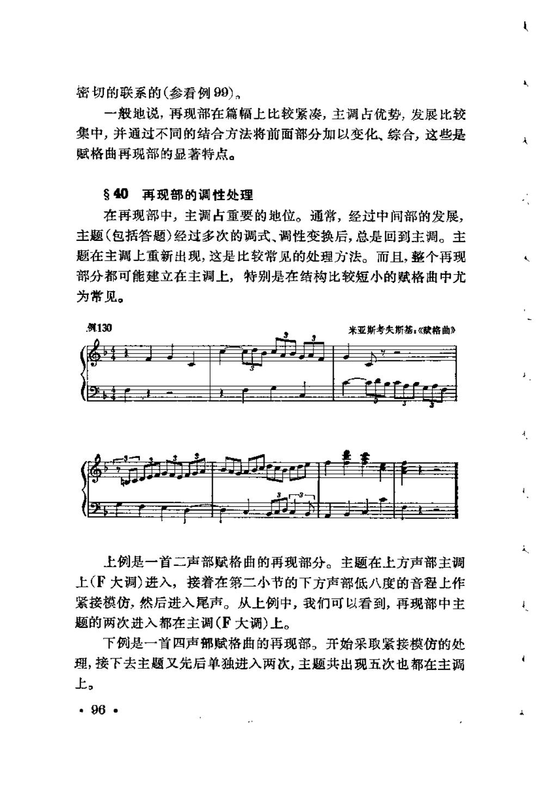
密切的联系的（参看例99)。
一般地说，再现部在篇幅上比较紧凌，主调占优势，发展比较
集中，并通过不同的结合方法将前面部分加以变化、综合，这些是
赋格曲再现部的显著特点。
40再现部的调性处理
在再现部中，主调占重要的地位。通常，经过中间部的发展，
主题（包括答题）经过多次的调式、调性变换后，总是回到主调。主
题在主调上重新出现，这是比较常见的处理方法。而且，整个再现
部分都可能建立在主调上，特别是在结构比较短小的赋格曲中尤
为常见。
例.130
米亚斯考夫斯基：《紫格曲》
上例是一首二声部赋格曲的再现部分。主题在上方声部主调
上(F大调)进入，接着在第二小节的下方声部低八度的音程上作
紧接模仿，然后进入尾声。从上例中，我们可以看到，再现部中主
题的两次进入都在主调（F大调)上。
下例是一首四声部赋格曲的再现部。开始采取紧接模仿的处
理，接下去主题又先后单独进入两次，主题共出现五次也都在主调
上。
·96·
PDF 第 90 页
第八章 再现部与尾声：持续音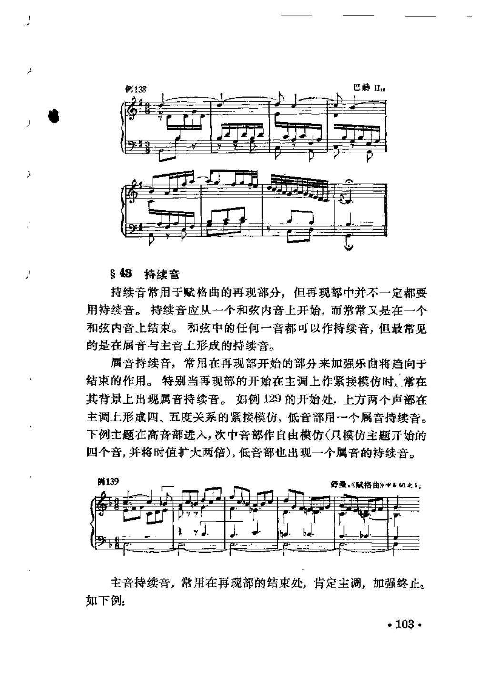
巴赫I
48持续音
持续音常用于赋格曲的再现部分，但再现部中并不一定都要
用持续音。持续音应从一个和弦内音上开始，而常常又是在一个
和弦内音上结束。和弦中的任何一音都可以作持续音，但最常见
的是在属音与主音上形成的持续音。
属音持续音，常用在再现部开始的部分来加强乐曲将趋向于
结束的作用。特别当再现部的开始在主调上作紧接模仿时，常在
其背景上出现属音持续音。如例129的开始处，上方两个声部在
主调上形成四、五度关系的紧接模仿，低音部用一个属音持续音。
下例主题在高音部进入，次中音部作自由模仿（只模仿主题开始的
四个音，并将时值扩大两倍），低音部也出现一个属音的持续音。
139
舒曼：《赋格曲》作基60之3：
主音持续音，常用在再现部的结束处，肯定主调，加强终止。
如下例：
·103·
PDF 第 93 页
第九章 赋格曲的整体布局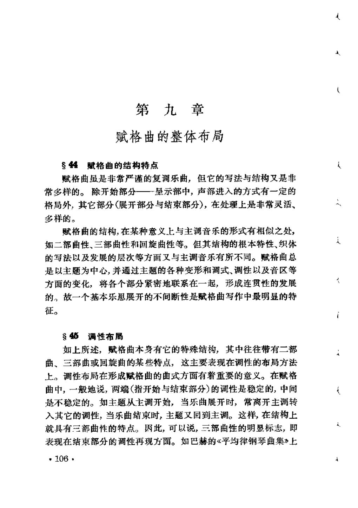
第九章
赋格曲的整体布局
44赋格曲的结构特点
赋格曲虽是非常严谨的复调乐曲，但它的写法与结构又是非
常多样的。除开始部分一呈示部中，声部进入的方式有一定的
格局外，其它部分（展开部分与结束部分），在处理上是非常灵活、
多样的。
赋格曲的结构，在某种意义上与主调音乐的形式有相似之处，
如二部曲性、三部曲性和回旋曲性等。但其结构的根本特性、织体
的写法以及发展的层次等方面又与主调音乐有所不同。赋格曲总
是以主题为中心，并通过主题的各种变形和调式、调性以及音区等
方面的变化，将各个部分紧密地联系在一起，形成连贯性的发展
的，故一个基本乐思展开的不间断性是赋格曲写作中最明显的特
征。
4调性布局
如上所述，赋格曲本身有它的特殊结构，其中往往带有二部
曲、三部曲或回旋曲的某些特点，这主要表现在调性的布局方法
上。调性布局在形成赋格曲的曲式方面有着重要的意义。在赋格
曲中，一般地说，两端（指开始与结束部分)的调性是稳定的，中间
是不稳定的。如主题从主调开始，当乐曲展开时，常离开主调转
入其它的调性，当乐曲结束时，主题又回到主调。这样，在结构上
就具有三部曲性的特点。因此，可以说，三部曲性的明显标志，即
表现在结束部分的调性再现方面。如巴赫的《平均律钢琴曲集》上
·106.
- 整体布局把主题进入与调性运动对齐
呈示部建立主属；中间部用关系调与下属方向扩展，并以间插段连接；再现回到主调，最后用紧接、持续音与尾声收束。
“两端（指开始与结束部分)的调性是稳定的，中间是不稳定的。”
- 巴赫式近代赋格：起段、中段、结段
起段完整呈示；中段以间插与主题再陈述交替并作调性扩展；结段回到主调并完成收束。三段功能比“固定小节数”更重要。
“赋格曲总是以主题为中心，并通过主题的各种变形和调式、调性以及音区等方面的变化，将各个部分紧密地联系在一起”
PDF 第 104 页
第十章 二重、三重赋格曲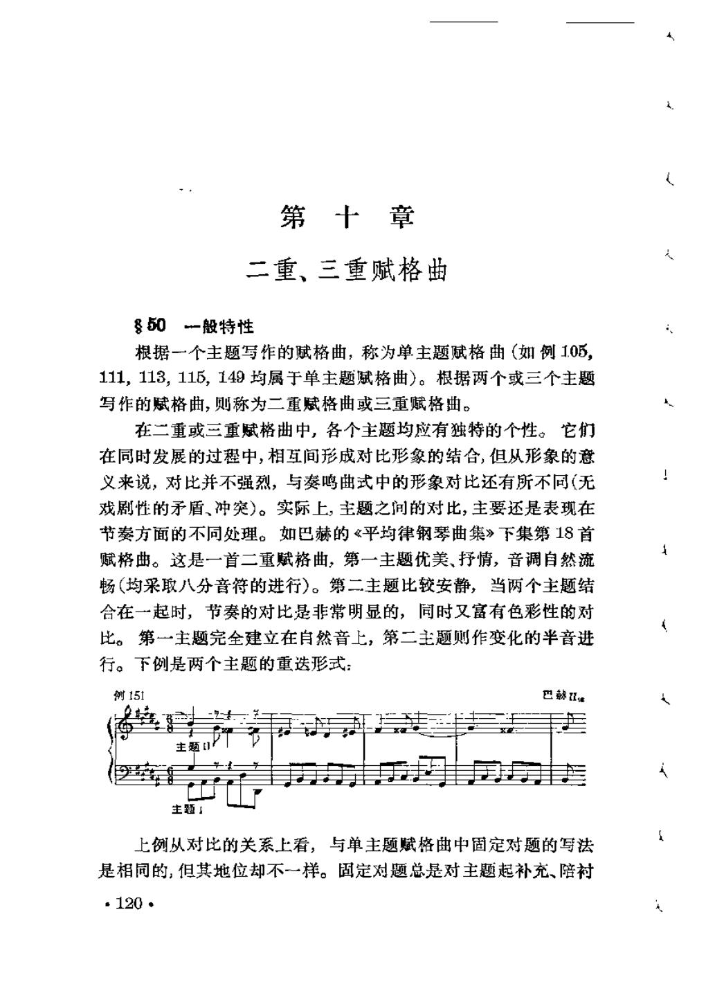
第十章
二重、三重赋格曲
&50一般特性
根据一个主题写作的赋格曲，称为单主题赋格曲（如例1.05，
111，113，115，149均属于单主题赋格曲）。根据两个或三个主题
写作的赋格曲，则称为二重赋格曲或三重赋格曲。
在二重或三重赋格曲中，各个主题均应有独特的个性。它们
在同时发展的过程中，相互间形成对比形象的结合，但从形象的意
义来说，对比并不强烈，与奏鸣曲式中的形象对比还有所不同（无
戏剧性的矛盾、冲突）。实际上，主题之间的对比，主要还是表现在
节奏方面的不同处理。如巴赫的《平均律钢琴曲集》下集第18首
赋格曲。这是一首二重赋格曲，第一主题优美、抒情，音调自然流
畅（均采取八分音符的进行）。第二主题比较安静，当两个主题结
合在一起时，节奏的对比是非常明显的，同时又富有色彩性的对
比。第一主题完全建立在自然音上，第二主题则作变化的半音进
行。下例是两个主题的重选形式：
巴赫I
例151
主题
上例从对比的关系上看，与单主题赋格曲中固定对题的写法
是相同的，但其地位却不一样。固定对题总是对主题起补充、陪衬
·120·